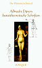

|
ADAM UND EVA (1507)
Zwei Ölgemälde auf Holz von je 209 x 81 cm
Museo del Prado, Madrid (Spanien)
∆
Kommentar
Mit den beiden Gemälden von Adam und Eva hat Dürer die ersten lebensgroßen Akte der deutschen Malerei geschaffen. Er hat sich dabei vor allem auf die Proportionen des menschlichen Körpers konzentriert, dessen Größe auf die mit neun multiplizierte Höhe des Kopfes geschätzt wird, während die Größe der Personen auf einem zuvor angefertigten Kupferstich (1504) zu demselben Thema die mit acht multiplizierte Höhe des Kopfes ausmacht.
∆
Analyse
Bei seiner Rückkehr nach Nürnberg 1507 malt Dürer die beiden Gemälde Adam und Eva. Während der 1504 zu demselben Thema angefertigte
Kupferstich ein aus Geraden und Kreisen bestehendes System von höchster mathematischer Präzision aufweist, verkörpern die beiden Akte aus dem Prado ein klassisches Schönheitsideal. Mit ihren fließenden Konturen und der Instabilität ihrer Haltung geht eine an die Gotik erinnernde Sinnlichkeit von ihnen aus und stellen die Vorläufer des Manierismus dar, der später von Cranach und Baldung Grien aufgegriffen wird.
∆
Links
Website des Prado-Museums in Madrid:
http://museoprado.mcu.es/ihome.html
Buch
Albrecht Dürers kunsttheoretische Schriften, Ilse Hammerschmied (Fouqué-Literaturverlag, 1997)
 Der enorme schriftliche Nachlass Albrecht Dürers stellt den Maler in Bezug auf seine kunsttheoretischen Aussagen auf eine Stufe mit Leonardo Da Vinci und andere Größen der Renaissance. Dürer suchte anfangs nach der "idealen Proportion" die er in seinen frühen Gemälden von Adam und Eva des Prado darzustellen sucht.
Der Verdienst des vorliegenden Buches liegt darin, dass hier alle kunsttheoretischen Aussagen Dürers durch eine Gliederung in fünf Themenkreise erstmals in eine systematische Ordnung gebracht werden. Auch die Änderung von Dürers Ansichten im Laufe seines Lebens lassen sich anhand dieser Arbeit nachvollziehen.
∆
|